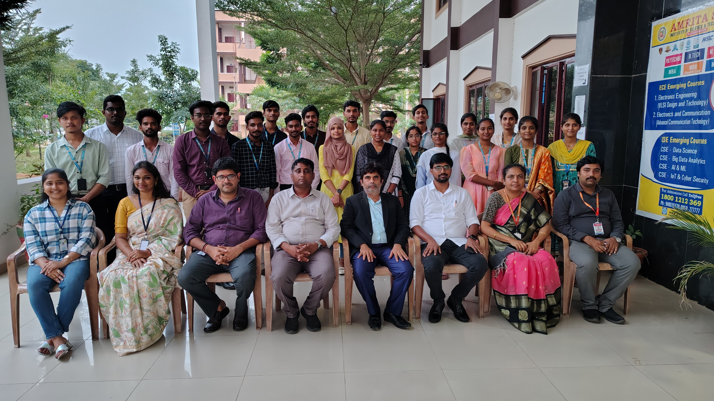
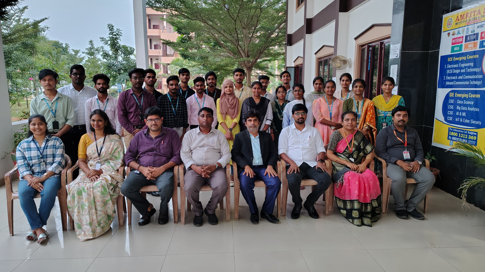
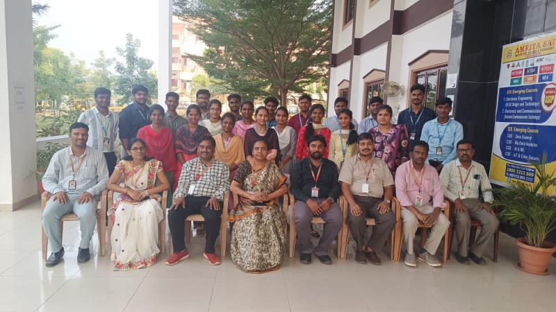

AMRITA SAI
INSTITUTE OF SCIENCE AND TECHNOLOGY
AUTONOMOUS
ADMIN/ 

About us :
- Amrita Sai Institute of Science and Technology is an autonomous institution and we are permanently affiliated with JNTUK and Andhra Pradesh. The institution is approved by All India Council for Technical Education (AICTE), New Delhi. Amrita Sai Institute was established in 2007 under the auspice of Amrita Sai Educational Improvement Trust.
The trust is run by veterans in the education industry. Since the establishment, the institute kept on excelling in different fields starting from Engineering, Research, and Development, Management. With a focus on quality education, solid research, and sensible training, Amrita Sai emerged as a premier institute with 100% placement in various companies.
Amrita Sai Institute of Science & Technology is recognized by UGC under 2(f) & 12(B) of the 1956 Act. The College is complying with the standards of ISO 9001: 2015. In recognition of its quality in technical education, it is accredited by the NAAC with an “A” Grade, awarded A grade by Govt of AP, and Permanently Affiliated to JNTUK.



Gani Atkuru Rd, Bathinapadu,
Andhra Pradesh 521180.